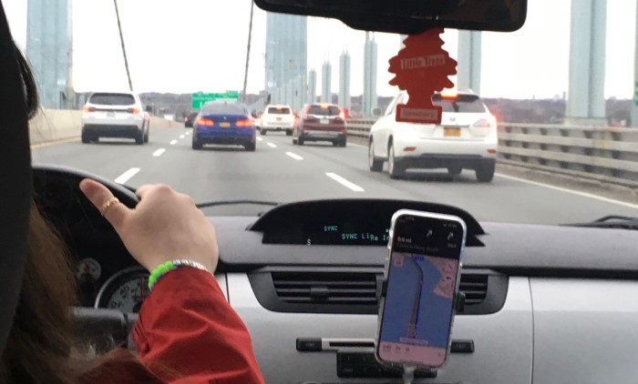
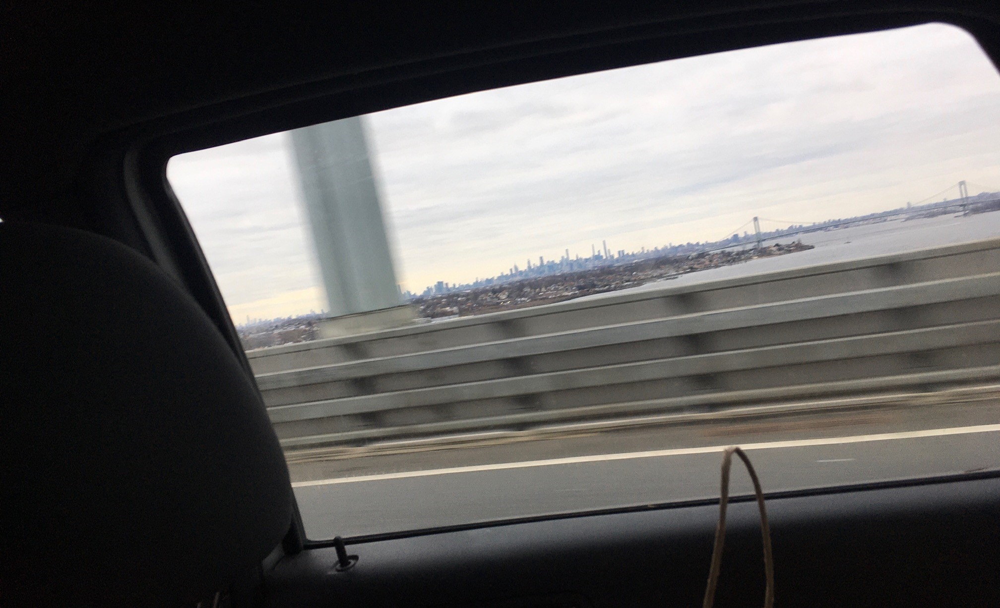
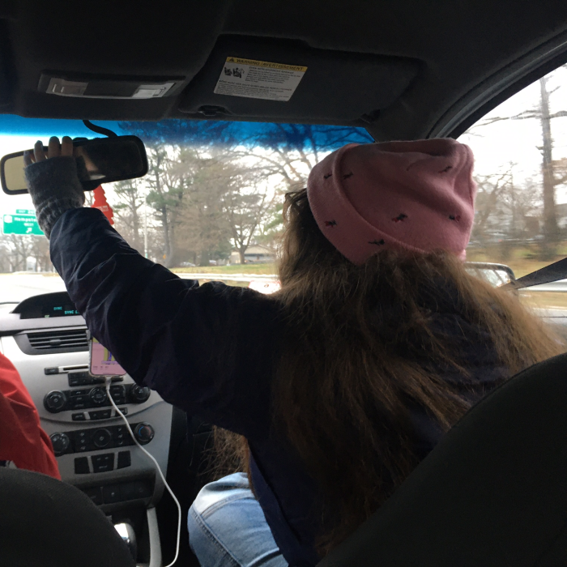
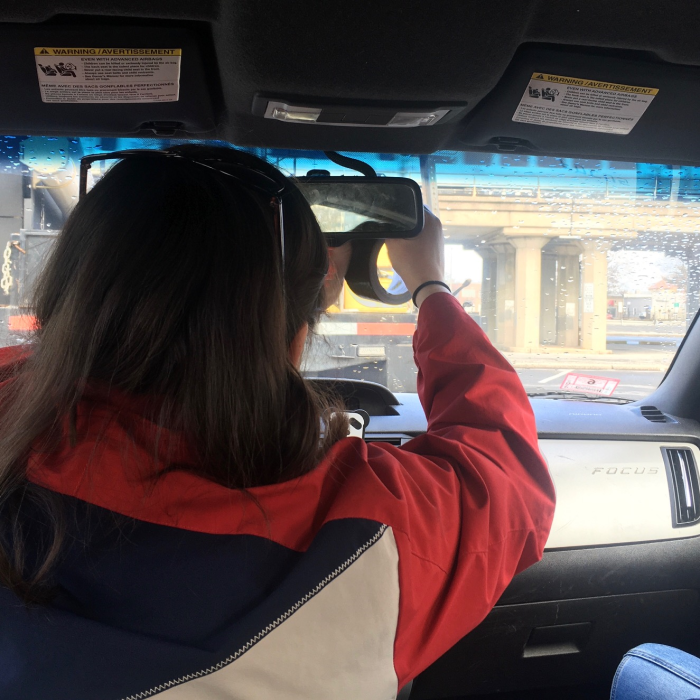
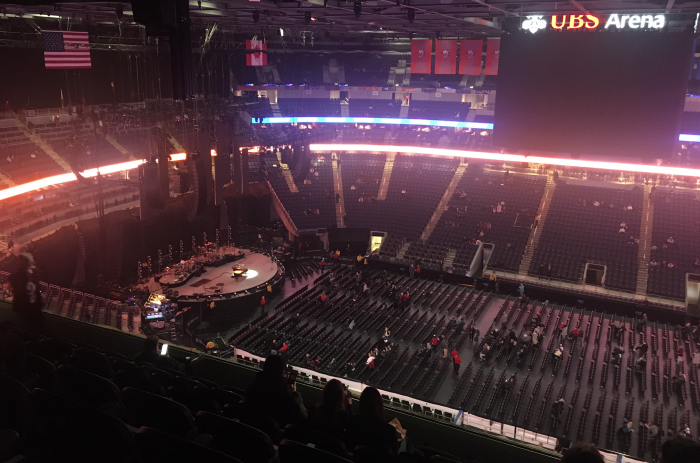
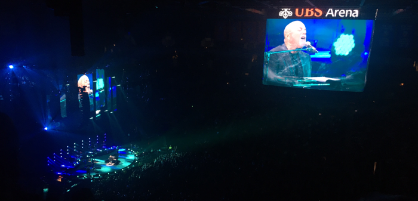
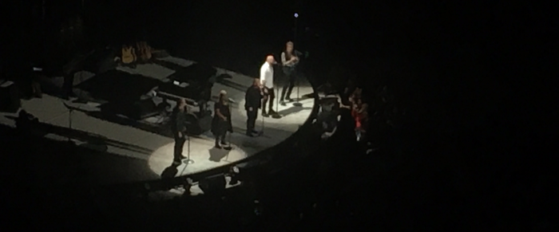
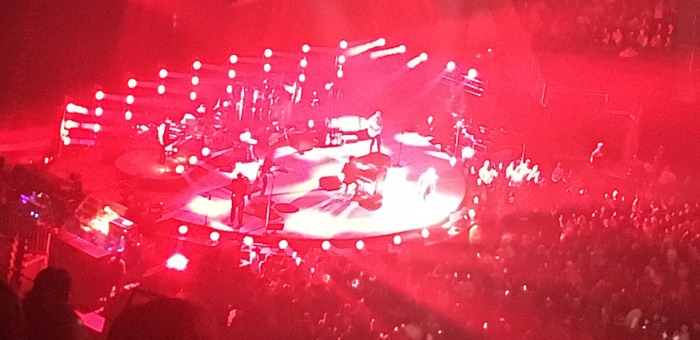
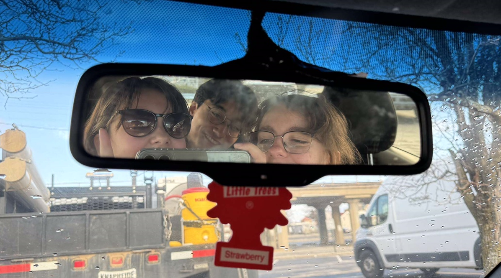

New Years in New York with Billy Joel
Road-tripping to Long Island for a concert
By: Evan Lee
Jan. 7, 2024 |
Adventures
“The deal is you gotta get me Billy’s signature,” said the Postmaster as he approved my leave slip.
“Sure, I’ll bring the uniform and say I got a letter he needs to sign for!”
“Side-eye Billy,” courtesy Leighah
I did not get the signature.
It’s New Year’s Eve 2023 and I’m with my friends Leighah and Emily to see Billy Joel live at the UBS Arena in Elmont, New York.
“For the first time ever,” as the concert posters proclaimed, this was his very first show at UBS - changing things up from his usual residency at Madison Square Garden. It was also the NY native’s first performance back in Long Island since 2018.
So, calling it a packed show would be an understatement.
Having picked me up in Leighah’s car - a Ford Focus named Cocoa - the three of us set off on a road trip down from Greater Boston to Long Island to take our seats at the concert.
It was a three hour, 200 mile trip for me - and even further for them - but it didn’t feel as long. We did it all in one shot with Leighah behind the wheel and no rest stops in between, save for a Dunkin run at the start.
Crossing over the bridge to Long Island
For Leighah, this was a big bucket list event to finally cross off. Billy Joel is her all-time favorite artist, someone she’s been listening to since childhood and whom she’s always wanted to see live in concert.
And Emily and I are both fans too, so the trip was something we’d all been looking forward to since we got our tickets over a month ago.
Despite having not recorded anything new since 1993, the Piano Man still sells out every seat at his shows. Our tickets came off the resale market, putting us near the top of the stadium but still at a good angle to see it all.
Hearing it would be no problem regardless of where we sat.
To get in the mood, I made up a mixtape for us to play along the way. Taking songs mostly from 52nd Street - Leighah’s favorite Billy Joel album - it follows a jazz rock theme. Other artists like Steely Dan feature too.
We plugged a Walkman into the car’s aux port and hit play on the tape, spinning us into a radio recording of the New Years ball drop from 1976 before giving way to Zanzibar.
That’s my favorite song from the album and apparently a group favorite too as we all sang out to the lyrics.
Our road trip went by mostly smoothly. We played the license plate game and made fun of awkwardly humored law-firm billboards posted along the highway in Connecticut.
“NEED A HAND? CALL DAN”
Then the Manhattan skyline came into view as we crossed Throgs Neck Bridge into Long Island.
Certainly bigger than Boston.
This was actually my first time seeing NYC. The mass of buildings almost looked like a mountain range from a distance.
I’d like to come back and explore it someday, both Leighah and Emily already have. But like The Downeaster “Alexa” was Nantucket bound, our course today was set for Elmont.
The only real road-trip calamity we faced happened near the end of our drive when the car’s rear view mirror just decided to fall off. Emily, riding shotgun, had to hold it in place for the last 15 miles or so.
 What can you do ¯\_(ツ)_/¯
“That’s a tomorrow problem,” Leighah capitulated as we finally pulled into the hotel parking lot. We’d duct tape it back on later.
Despite the mirror mishap, Elmont was reached in good time with a few hours to spare till the concert started. After dropping off our bags in the hotel room and procrastinating for a bit watching cable TV, we set out for a bite to eat at a Wendy’s near the arena.
Leighah decided to film a vlog here, something she’d been doing throughout the trip to make a memento video with later on. But I interrupted it by proclaiming “burgers” with nothing else to add. Sorry.
We hung out there till about 8 PM when the arena opened up for early entry.
Crossing a few streets and walking through a small park to reach it, the lines to enter were already jam packed. Spanning the entire east side of the building, we chose one and it took us a while to make our way inside. There was a security check before we finally submitted our digital tickets.
Now in, we strolled past most of the overpriced merch and concession stands, though Leighah did opt for a can of wine. Then we found our seats.
The arena filling up before the concert
We were very high up and to the left of the stage, so it appeared small to us. But there was also a huge screen hanging down from the middle of the roof that we could watch for closer views.
At around 9:30 PM, the opening act walked onto the stage - Regina Spektor.
Emily was already familiar with the singer-songwriter, but I had never heard her music before. She was good though, a pianist like Billy Joel with a strong voice.
Being Russian-American, the lyrics of one of her songs - “Après Moi” - was also split between English and Russian. She played for a solid hour-and-a-half until 11 PM when the main act switched over.
Billy on the big screen
With a roaring round of applause from the now filled stadium, the Piano Man himself took the stage and dove right into his hit single - “My Life.”
A fitting introduction as he played songs spanning his entire musical career throughout the night, even going as far back as his very first, lesser known 1971 album - Cold Spring Harbor.
“You don’t have that album. Nobody bought that album!” he joked before playing “Everybody Loves You” from it.
It was rather his second album, Piano Man, where Joel really broke out as an artist. With the title track being arguably his most famous work, it’d only be a matter of time before he played it at the concert.
And we all knew when it was coming once the harmonica holder was whipped out.
As a performer for over 50 years, the man was humble about his age, even making fun of himself for not being able to hit the high notes on some songs anymore.
But he still gave a spectacular performance that only got better and better as the night went on.
The photos my phone took were unfortunately not as spectacular
Along with his own work, covers from other bands like Led Zeppelin and The Beatles were played too. Some covers even had other members of the band take center stage.
The only time Billy was by himself was when he played “Souvenir,” a solo piano driven song and one of his shortest.
Just before midnight, the music paused as a countdown to the Ball Drop in Time Square was broadcasted over the giant screen. The whole stadium stood to watch and count down with it as 2023 turned to 2024.
“10, 9, 8, 7, 6, 5, 4, 3, 2, 1...
But the show was still far from over.
Returning for the encore, Billy and his band pulled out all the stops. Launching right into “We Didn’t Start The Fire,” the crowd sprang up again as the lights shone fiery red.
We didn’t start the fire but they turned on the lights
Following up came even more of his greatest hits - “Uptown Girl,” “It's Still Rock and Roll to Me,” and “Big Shot.”
Then finally, “You May Be Right” played just before 1:30AM with Regina Spektor coming back on stage to sing along with Billy and close out the night.
We were kinda bummed that Zanzibar never played, but the concert still hit many of our favorites. “Allentown” for Emily, “We Didn’t Start The Fire” and “Vienna” for Leighah, and “It’s Still Rock And Roll To Me” for yours truly.
I don’t think any of us really slept well after finally getting back to the hotel. I was certainly still wound up and only partially slept.
But it was definitely a night to remember!
Taped up and ready to head back home